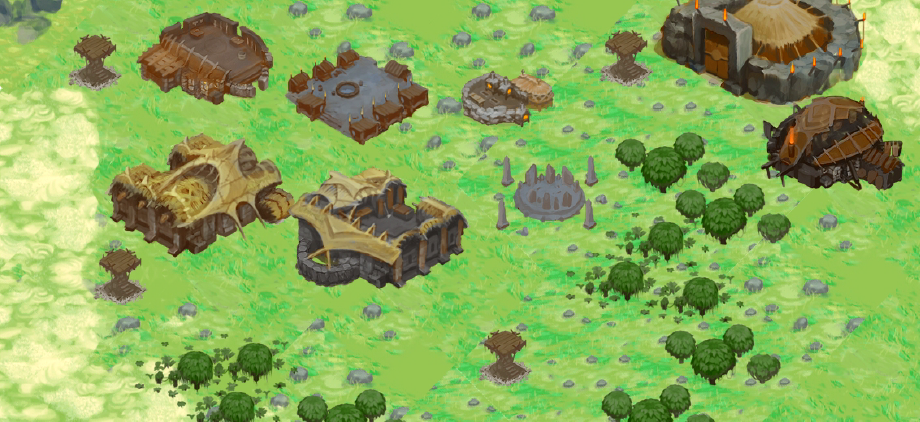

InfoSec Innovations
I was brought in by the founder of the company, Mick Douglas, after he came across Lord of the Manor and saw that I was looking for work. I have made my way from contractor to partner status over the years.
My main role has been taking ideas and proofs of concept and making them into actual functioning and architected projects. I have also provided solutions for our clients, but discretion is part of what we do at ISI, so I will not list those here.
Shabti AI

https://github.com/InfoSecInnovations/shabti
We do some clever document retrieval processing to provide focused query results even from relatively low powered locally run language models. Create collections of documents, and ask questions or just search and find relevant entries from the sources you provided.
An easy to use web interface which abstacts away a lot of the hard parts of running an AI stack with document retrieval on your own hardware.
Features optional RBAC controls to enable multiple users to access the system with different permission levels, keeping the documents secure and only available to authorised users.
Chainsmith Recon
https://github.com/InfoSecInnovations/chainsmith-recon
A tool for discovery and identification of vulnerabilities in AI related systems. It leverages a mix of deterministic detections with some optional AI-based analysis.
My role on this project has been more advisory for the moment. Mick implemented it using AI assisted coding and I have been examining and offering improvements to the architecture and file structure.
Project Fantastic

https://github.com/InfoSecInnovations/project-fantastic
This was my first InfoSec Innovations project. It was quite an ambitious plan to create a visualiser for computer networks where you could get an overview of which systems are present and perform a variety of actions on them.
We started adding features such as a "story tree" which was intended to guide the user through securing and taking inventory of their network step by step.
Our focus shifted to other projects, but we may revisit the concept at some point because it had potential.
Game Developer
Lord of the Manor

https://www.lordofthemanor.net
A quick prototype I put together for my portfolio back in 2019. It was well received and I put it back online recently as I had some requests from people who had previously played it.
It's a medieval city builder inspired by some of the classic city building games with a fairly hands-off approach: place key buildings and infrastructure and inhabitants will arrive and settle if you provide for them. Just click the link to start playing right in the browser!
I have been working on a Godot port recently which I intend to release on Steam with several enhancements over the original game.
Lord of the Manor Online

As a side project I have been slowly working from the original vision I had behind Lord of the Manor had it not been a quick prototype to add to my portfolio. I was originally aiming for something more akin to a 4x, but then I got drawn into the idea of controlling your character more directly and it evolved into quite an ambitious life simulation concept.
A multiplayer online game meant to be played with a group of friends. You start at the very bottom and work your way up the ranks to become a more influential character in the game world, or you can just remain a peasant if that's what you're into.
Most of the engine and server infrastructure is now implemented and I will be able to focus more on adding game mechanics and content as well as running some playtests.
Before
A prehistoric simulation game by Bill Lowe and Facepunch Studios. I was part of a very small team of programmers working in the Unity Engine for this project.
Unfortunately it was never completed, but I developed an array of technical and collaborative skills during this time.
Musician
DoctoR DooM
https://doctordoom.bandcamp.com/
Heavy retro-fuelled Progressive Rock. Yes, we have been playing since 2011 and still going strong! A new album is in the works.
I play bass and perform audio engineering duties in this project.
Tribal Hero Soundtrack

https://soundcloud.com/s2b-electronica/sets/tribal-hero-soundtrack
Tribal Hero was one of the browser games that inspired me to start making my own, and I was able to contribute to the project by composing a soundtrack for it. Unfortunately the game is no longer active, but you can still listen to the music.